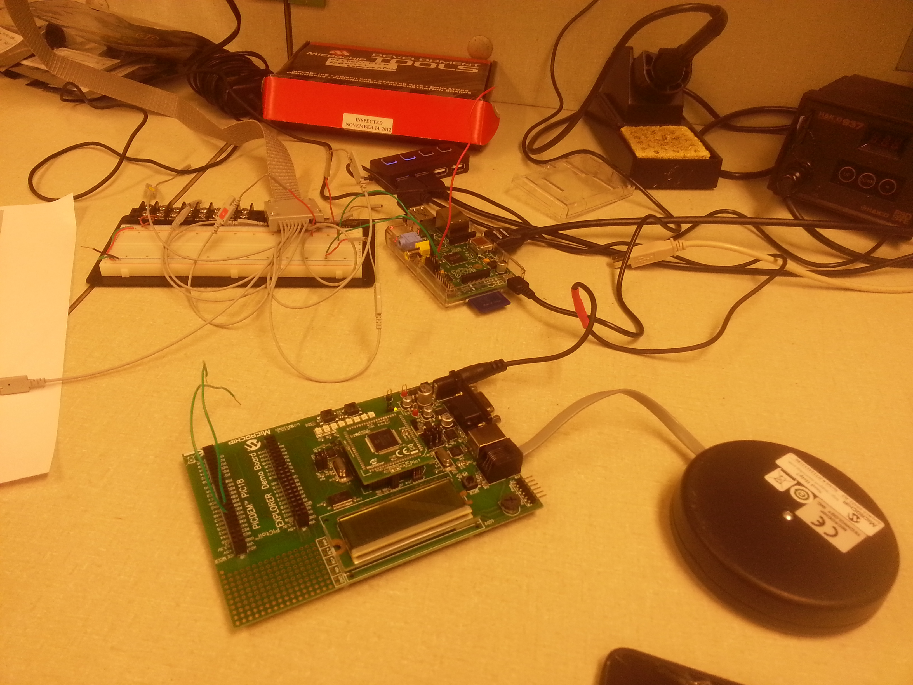
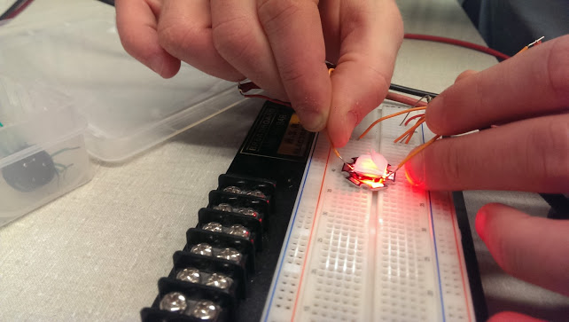

January 15, 2014 (2 hour): Met as a team to work on preliminary project proposal.
Open source code was explored for projects similar to the proposed Every1 DJ design.
WEEK 01 SUMMARY Accomplishments: Submitted preliminary project proposal. Weekly Work Total: 2 hours Project Work Total: 2 hours
Week 02
January 22, 2013 (2 hour): Created first draft of final project proposal.
Need to finalize PSSC and review draft with with team members.
January 23, 2013 (1.5 hour): Began searching online for possible onboard
computers to fill the need of our project. Initial decision was
Raspberry Pi. Documentation was reviewed to understand the
capabilities and requirements of the rpi.
WEEK 02 SUMMARY Accomplishments: Submitted final project proposal Weekly Work Total: 3.5 hours Project Work Total: 6.5 hours
Week 03
January 28, 2013 (2 hour): Started Homework 2, PCB design exercise.
During this activity a switching power supply circuit was duplicated using the National Semiconductor
LM2675. The transition from schematic to board proved difficult and needed the assistance of TA to complete.
January 39, 2013 (1.5 hour): During weekly lab final PSSC's were informallly accepted.
A Raspberry Pi was ordered and should arrive within two days.
January 30, 2013 (1 hour): Homework 2 was completed with the help of the TA.
WEEK 03 SUMMARY Accomplishments: Homework 2 - PCB Design Weekly Work Total: 4.5 hours Project Work Total: 11 hours
Week 04
February 6, 2013 (1.5 hour): Team meeting was held to complete Homework 3.
During the meeting parts were decided upon and the majority of the assignment was completed.
February 8, 2013 (3 hour): Received Raspberry Pi from teammate and began
steps to load an OS. New Out Of Box Software (NOOBS)
was loaded onto the formated SD card. Raspbian OS was chosen based
on user reviews, capabilities and documentation. The OS was then installed and the RPI became functional!
The wifi configuration was modified and some time was spent exploring the existing applications. A HDMI to VGA
converter was purchased to avoid having to use living room tv. A USB hub was also purchased to allow a mouse and
keyboard to be used while the wifi dongle is attached.
WEEK 04 SUMMARY Accomplishments: Completed Homework 3 and Raspberry Pi has OS loaded Weekly Work Total: 4.5 hours Project Work Total: 15.5 hours
Week 05
February 12, 2013 (2 hour): During the required lab we reviewed our progress with Homework 4 and continued to finalized our parts list.
It was pointed out by the TA's that the parts list was missing components related to power. After the discussion regulators and a power
supply were added to the list. Some components have been added and others will continue to be purchased.
February 14, 2013 (1.5 hour): Homework 4 was thoroughly reviewed and modified after receiving some negative feedback on Homework 3.
Once the team was satisfied with the report and it had been turned in the attention was shifted to the test board provided by Joe.
Time was spent reviewing a tutorial and online help for the MPLAB IDE. Unfortunately we did not have a power supply for the micro
during this time so there wasn't much of an accomplishment. The short term goal is communicate between the Raspberry Pi and Micro through
serial.
February 15, 2014 (3 hours):
After receiving the correct power supply from Joe it was time to set up the MPLAB IDE and attempt to run a test program on the micro.
Most of this time was spent reading online help forums trying to get the IDE to compile a program and recognize the MPLAB ICD 3 in-circuit debugger.
It was discovered that a separate C compiler must be installed and selected, instead of coming with the program as expected. The issue with the ICD 3
turned out to be diver incompatibility between different versions of the MPLAB ICD software. Finally, a test program was compiled and programmed on the micro.
WEEK 05 SUMMARY Accomplishments: Homework 4 submitted Weekly Work Total: 6.5 hours Project Work Total: 22
Week 06
February 19, 2014 (2.5 hours):
During mandatory lab session there were discussions with the course staff regarding the schematic and Homework 5 as a whole.
Work continued on the hardware narrative homework and individual sections were assigned within the group. Continuing from the success of
getting MPLAB IDE successfully working the team created a test program to blink the LED's on the PIC development board. This may not be a huge
accomplishment but it was exciting to finally see the microcontroller perform some 'action'.
February 20, 2014 (2 hours):
Continued to work on Homework 5, hardware narrative. This included research on the communication data rates available between the microcontroller
and other components such as Raspberry Pi
and the LED Driver.
February 21, 2014 (4 hours):
A team meeting was held to continue progress on the hardware narrative report. Much of the time was dedicated to coming to a consensus
regarding the port assignments for each of the subsystems. It was decided that the internal oscillator would be used for the microcontroller
and a frequency of 4MHz was chosen. Using scalers the appropriate clock speed will be attained for each of the peripherals.
February 22, 2014 (2 hours):
Research was conducted to better understand the steps necessary to successfully stream a song using the GrooveShark API.
It was discovered that Grooveshark is pretty strict on their licensing laws:
Grooveshark Streaming. and an API key was requested.
February 23, 2014 (2 hours):
The Raspberry Pi was set up at the team station for our first test of the SPI ports. After once again struggling
with the wifi adapter for the RaspberryPi an ethernet connection was established and the github repository was
successfully cloned on the rpi. Using the SPI python walkthrough provided by 100randomtasks.com
the serial ports showed some activity. No specific values were successfully read or written but that is the next goal.
WEEK 06 SUMMARY Accomplishments: Raspberry Pi SPI has some output
Schematic was completed for Homework 5 Weekly Work Total: 12.5 hours Project Work Total: 34.5 hours
Week 07
February 24, 2014 (4 hours):
After overcoming more problems with the MPLAB IDE software the SPI communication was tested using
predefined SPI write and read functions. When this was unsuccessful the functions were abandoned and
new code was written to manually check the SPI flags and fill the SPI buffer.
A header was soldered for the Raspberry Pi SPI pins in order to easily connect them to the PIC
development board pins.
February 25, 2014 (3 hours):
The focus of today's work session was once again to communicate between the microcontroller and the Raspberry Pi using SPI.
After confirming that the Raspberry Pi must be the master in the SPI master slave interface, a successful array of data was sent
from the raspberry pi to the microcontroller and stored in a buffer. The signals were viewed using a logic analyzer to confirm the correct
clock rate (62.5MHz) and the data being sent.
The setup that was used to test SPI communications:

February 26, 2014 (4 hours):
The lab discussion was concerned with audio streaming and API selection. Grooveshark's streaming
API appears to be the best option however a session key is required by Grooveshark and it has
been weeks without a reply from them. Other options were explored in the event that we are not
able to use Grooveshark. These other options included paying for a spotify account in order to
use their streaming API, for downloading video's from youtube and using the audio from them. The latter
is not preferred.
February 27, 2014 (6 hours):
Upon inspection of the existing PCB layout, it was determined that all of the different voltages (3.3V, 5V, 12V) were connected together in the schematic and the PCB board.
This turned out to be a huge fix since nearly every power and ground trace need to be re-routed. The trace widths were changed for all power and
ground signals since previously they had all been set to 12 mil which is much to small for the amount of current required. It was discovered that
we had no connector for the power supply so the appropriate 3.5mm female connector was found in eagle and added to the layout.
The PCB board at the conclusion of the days work:
February 28, 2014 (8 hours):
The goal of today was to complete the initial PCB layout required for Homework 06. In order to
complete the board the BJT circuitry for the motor control was replaced by a
L239D Motor Driver. The RJ-11 connector
needed to be connected to the programming pins of the microcontroller. Power and ground planes were
added to the board. Separate analog and digital ground planes were create in order to keep the signals
divided except for a single point. Finally power and ground pins needed to be routed to the existing
bypass capacitors.
The initial version of the PCB layout can be viewed below:
March 1, 2014 (1 hours):
A brief team meeting was held today to divide Design Review presentation subtasks.
WEEK 07 SUMMARYAccomplishments:
Meaningful communication from Raspberry Pi to microcontroller
PCB layout draft completed Weekly Work Total: 29 hours 34.5
Project Work Total: 63.5 hours
Week 08
March 2, 2014 (1.5 hours):
Design review slides and presentation preparation.
March 3, 2014 (7 hours):
Last week data was successfully sent from the Raspberry Pi to the microcontroller via SPI.
Today the focus was to send data bidirectionally. After gaining a better understanding of the SPI
peripheral it was determined the SPI was being opened in the wrong mode. Once this was changed
there was a successful transfer of data to and from the microcontroller. It was also discovered that
the microcontroller uses the same buffer for sending and receiving SPI data.
After the successful SPI transmission the focus was shifted to the schematic and pcb board. A 0 Ohm
resistor was added between analog and digital ground. This allows the ground to stay separated during testing
then joined together. Current limiting resistors were added between the LED driver and each of the LED header
ins. The MPlab reference sheet was used to correctly connect the RJ-11 connector which will be used to program
the microcontroller. A new power supply connector was created and added to the pcb board.
All of the parts that had been modified in the schematic were re-routed in the board. The power and ground
trace widths were increased wherever possible.
Below was the state of the board at the completion of the night:
March 4, 2014 (2 hours):
Design review practice and team meeting to discuss feedback from course staff and peers.
March 5, 2014 (3 hours):
Updated PCB board with parts and connections that changed as a result of the design review. The ground plane that had
been created was not named appropriately and therefore was not actually connected to ground. This was fixed as well as adding
rank to different planes in order to avoid overlapping.
An LED was tested using a 5V input in order to determine if 100mA current would be enough for the
red, green, and blue LEDs. Using a piece of paper as eye protection the results were successful!

March 6, 2014 (3 hours):
Power components continue to change as we find new requirements that had previously been overlooked. The footprint of the bulk capacitors were
much too small.
Audio drivers were installed on the Raspberry Pi. A few settings such as output volume and output device were modified. The audio originally
is set to output from HDMI and this was changed to analog output. A wav file was downloaded and successfully played on powered speakers.
When the oscilloscope was set up to view the output on headphone wires nothing but noise was heard.
March 7, 2014 (1 hours):
Went in with Courtney to discuss a few concerns with Joe. The audio amplifier design was modified in order to regulate the negative feedback.
The footprint of a few power components (capacitor and inductor) were determined to be too small and will need to be changed.
March 8, 2014 (2.5 hours):
A test circuit was set up for initializing the LCD. Online documentation on the NHD-2.23-12832UCB3 is limited but the
data sheet did provide the initialization sequence necessary to turn the LCD on.
After searching for open source code available online
Source Code
was found that provided a sample program to turn the LCD on and send data. Even after reading this the LCD was still
not successfully turned on.
Week 08
WEEK 08 SUMMARY Accomplishments: LEDs were successfully tested at 5V 100mA
SPI data was sent bidirectionally between Raspberry Pi and Microcontroller
PCB board and schematic were updated as a result of design review Weekly Work Total: 19 hours Project Work Total: 82.5 hours
Week 09
March 9, 2014 (5 hours):
Worked on getting LCD to turn on and display anything.Each command was analyzed using the oscilloscope
and appeared to be sent correctly and in the right order. Was able to briefly get some random pixels to light
up but even this stopped working.
It was discovered that the reason the screen lit up once earlier in the day but had appeared
'off' since then was due to the entire RAM space in the LCD being initialized to 0. When the LCDwrite module tried to
write a character the starting column and row were not reset to 0, but were instead at the very end of the RAM space
(not visible on the LCD). Once this was fixed the LCD was successfully initialized and data was displayed.
March 11, 2014 (5 hours):
The schematic was updated with the final power and audio circuitry components. The component changes included
using one stepper voltage regulator for 12V to 5V and one LDO for 5V to 3.3V. All of the bulk capacitors had been
changed to correctly match the part footprint. The diodes were changed to surface mount.
Once these parts had been finalized on the schematic the board routing began. The layout of the voltage regulator
followed the data sheet recommendation as closely as possible. The audio circuitry was kept compact and separate
from the other components due to it having and anlog ground. The trace widths for power and ground were kept wide to
avoid overheating with the high current requirements. Vias were added to connect the ground plans on the top and
bottom.
March 12, 2014 (2 hours):
During lab the current status of the PCB board and schematic were discussed with the course staff. Overall the results
were positive. A few small changes were made including removing acute angles and adding a hole for a stabilizing piece
on the underside of the dc power jack.
March 13, 2014 (1 hours):
The board was submitted to the online checker. There was only one issue of a hole being too close to the ground plane. This issue
was resolved and resubmitted through the online checker. Success!
March 14, 2014 (0.5 hours):
Went to the lab to finish the required checkoffs before submitting the PCB design. This included sending the course
staff a .zip file of all the pcb files and board dimensions. The board should arrive the week after spring break.
WEEK 09 SUMMARY Accomplishments: The LCD was correctly initialized and displaying letters
PCB board was completed and submitted for fabrication. Weekly Work Total: 13.5 hours Project Work Total: 96 hours
Week 10
WEEK 10 SUMMARY Accomplishments: No work was completed this work due to Spring Break. Weekly Work Total: 0 hours Project Work Total: 96 hours
Week 11
March 23, 2014 (2 hours):
A team meeting was held to review our current progress and to assign tasks going forward. Once the
managerial work was complete the commands sent between the Raspberry Pi and microcontroller via SPI
were established. The Raspberry Pi will send a heartbeat message every 100ms(?). When a push button
microcontroller is pressed requesting a new song the microcontroller will load a Next Song Request character
into its SPI buffer. When the Raspberry Pi receives this special command character it will load the
song meta data into its buffer to be send on the next 100ms transmission. The microcontroller will be expecting
the song data this time and will load the song name, artist, album, and year into global variables. These
global variables will be used to populate the LCD.
March 24, 2014 (3 hours):
The SPI testing circuit was reconstructed. Once bidirectional communication was confirmed
the correct interrupt registers were initialized in order to have the SPI communication fire the
Interrupt Service Routine (ISR). Inside this ISR the LCD initialization module was called. The LCD
was not successfully turned on from this call.
March 25, 2014 (4 hours):
The focus for today was to identify all of the registers necessary for the peripheral
initializations. These peripherals include SPI, I2C, PWM, ADC, Timer, and Push Buttons.
The register bits were also identified for the necessary interrupts and flags.
March 26, 2014 (6.5 hours):
Today Meyer confirmed that our audio beat detection circuity appeared to be correct. This is where the
good news ended as multiple pins were discovered to be routed incorrectly. The I2C clock and data pins were
connected to general I/O pins instead of the specified locations. It was also discovered that Vss/Vdd were
swapped in one location. After discussing the news with the team it was determined the pins could be manually
re-routed and a new board might not be necessary.
More bad news came when two different parts that were shipped during spring break did not match their
footprint on the PCB board. The correct version of the parts will need to be researched and ordered ASAP.
March 27, 2014 (2 hours):
Continued working on adding content to the including expanding upon the register initializations and giving
more details about how each of the peripherals behave and interact.
March 28, 2014 (5 hours):
Work on the software narrative continued. Much of today was spent getting a better understanding of the ADC and PWM
peripherals for our PIC18. Four PWM modules will be used in full-bridge mode to power the motor driver IC. The ADC module
will sample the audio out from the Raspberry Pi a certain number of times and return the total over the time giving a value
representing beats per minute.
March 29, 2014 (6 hours):
Today's accomplishments were very disappointing for the amount of time spent. The goal of today was
to finish up SPI testing and move on to I2C communication between the microcontroller and the LED driver.
Once the test circuit was set up even simple communication between the Raspberry Pi and microcontroller were
no longer working. After spending a great deal of time debugging it was determined that the oscilloscope
connecters were causing the signals to be tied high. It was not determined why this was the cause
but once the connector was switched the communication was close to the expected output. It was also
discovered that the ribbon cable made for our Raspberry Pi serial connectors had 1 pin that was not operating
correctly. Once these issues were dealt with the SPI communication was finally working again. However, the
LCD was not operating as expected anymore. After unsuccessfully debugging the LCD connections I2C sample code
was written but not tested yet.
WEEK 11 SUMMARY Accomplishments: SPI Bidirectional communication confirmed
Necessary registers for peripheral and interrupts were determined
I2C initialization and test code written Weekly Work Total: 22.5 hours Project Work Total:118.5 hours
Week 12
March 30, 2014 (4 hours):
After yesterday's disappointing testing today was more productive. The reason for the LCD not working
as expected was discovered to be 'noise' from the Raspberry Pi connections. Since all SPI share a clock
this is a serious issue. Once the Raspberry Pi connector was unplugged the LCD was once again turing on and
displaying characters. The LCD function was enhanced to allow strings as arguments from main. I2C communicaiton
was tested today and after addressing a few issues was successful. The primary issue for I2C was having to clear
the interrupt flag in software since it was not done in hardware like many other interrupts.
Finally the ADC module was written and tested. After reviewing the datasheet thoroughly the results of the
A/D conversion do not seem to be completely accurate.
April 2, 2014 (4 hours): During mandatory lab it was decided that a new board would be design in order to fix
issues with I2C connections and to recreate the audio circuit after testing. The audio circuit was tested and many issues were discovered with the gain and envelope detection. After deciding the LCD would now be controlled via I2C on the new PCB board layout, the LCD was successfully tested
using the I2C peripheral:
April 3, 2014 (6 hours): After working with the course staff the audio circuit was producing meaningful output.
However, instead of using the envelop detection it was determined that the audio would simply be tested after the op-amp. The sensitivity of
the beat detection can be modified through a potentiometer. The result can be viewed below.
Once the audio circuit was finalized the schematic and PCB were updated. The changes include the new audio circuit, changing
LCD to I2C pins and fixing a ground power issue with a bypass capacitor.
WEEK 12 SUMMARY Accomplishments: ADC initialization and sampling code was written. The audio circuit was finalized
with meaningful output. A new schematic and board were created to fix multiple errors Weekly Work Total:14 hours Project Work Total:132.5 hours
Week 13
April 6, 2014 (3 hours): A goal for this week is to prototype the LED driver. A basic test program was designed
and coded to light up a single light. In order to successfully do this multiple control registers on the LED driver needed to be initialized
and the individual LED PWM register needed to be greater than 0. It was discussed that the group blinking and dimming registers would be used
in the future once more LEDs were connected.
April 7, 2014 (2 hours): LED driver was soldered to a breakout board in order to begin prototyping. The soldered
pin connections were not correct the first or second time and were corrected. After brief testing there was no noticeable light on the LED.
April 8, 2014 (3 hours): Prototyping of the LED driver was resumed. After modifying the initialization of the
LED driver and still having no success, the I2C data and clock signals were scoped. The address signal was being ACK'd by the LED driver
but the other control signals were being NACK'd.
April 9, 2014 (5 hours): The datasheet was further examined for the LED driver and a reset sequence was found and
added to our initialization code. After the reset had been added, the microcontroller was now receiving ACKs for all commands sent to the
driver. However, even with the reset sequence the LED was still not turning on. The setup used to test the driver can be seen below:
April 10, 2014 (5 hours): The motor driver was wired up to a breadboard between the microcontroller and the motor wires.
A PLD was deemed necessary by the group and was programmed with a state machine corresponding to the coil combinations necessary to driver
the motor. The output of the PLD was correct but after talking with Joe, our PCB layout did not allow for a PLD to be added after the driver.
In order to emulate the function of the PLD a state machine was added to the motor code. This state machine is updated based on a certain
number of timer 2 interrupts. By varying the number of timer interrupts required before the state machine advanced to the next state allows
the motor to spin at variable speeds. A video of the motor spinning can be seen below.
April 11, 2014 (4 hours): The Reliability and Safety Analysis homework was completed. In order to complete this homework
successfully the Military Handbook
was utilized
as well as the individual component data sheets.
WEEK 13 SUMMARY Accomplishments: LED commands are being ACKd by the LED driver. The motor driver was successfully rotating through
the use of a state machine on the microcontroller. The motor speed can be changed easily in software. Weekly Work Total: 22 hours Project Work Total: 154.5 hours
Week 14
April 14, 2014 (5 hours): The heartbeat LED, RJ11 connector, bypass capacitors and microcontroller
were populated on the PCB. Once the ground and power were swapped on the incorrect bypass capacitor, the microcontroller was finally
tested. The result was an error stating a target device could not be found. After much testing, it was determined that the RJ11
connector was designed backwards on the schematic/board. The connections were fly wired for testing purposes. The ICD3 could not
find the device but was not able to get a valid device ID from the microcontroller.
The correct orientation of the RJ11 connector:
April 15, 2014 (5 hours): Testing of the microcontroller continued today. The clock and data lines
were scoped on the explorer board and compared to the same output from the microcontroller. The results appeared the same and did
not provide much help in debugging.
April 16, 2014 (5 hours): The structure of SPI commands between the Raspberry Pi and microcontroller had
been established earlier time. Today these commands were implemented in both modules. The Raspberry Pi and microcontroller were
successfully programmed and tested corresponding to each other's messages. The message structure is as follows:
RPI - Heartbeat - 0xAA
RPI - Song Data - 0xBB
Micro - Heartbeat - 0x01
Micro - Next Song - 0x02
Micro - Play/Pause - 0x03
This can be seen in the following code sample:
April 18, 2014 (3 hours):
A new microcontroller was added to the PCB which validated the theory that the previous microcontroller was damaged.
Once the LED driver was soldered the driver was once again but was still not showing meaningful output from the
driver via I2C.
WEEK 14 SUMMARY Accomplishments: Microcontroller and other components soldered to PCB board. SPI commands were programmed and successfully
tested. New microcontroller was successfully programmed. Weekly Work Total: 18 hours Project Work Total: 172.5 hours
Week 15
April 21, 2014 (4 hours) The motor driver and logic level translator have been soldered to the new PCB. After scoping
each of the pins it was determined the OE pin on the level translator was tied high even though the datasheet specifies it as active low.
Now the output to the motor driver is correct but the motor is not rotating as expected. The motor header was re-soldered which fixed the issue.
The motor now spins smoothly in one direction.
April 22, 2014 (5 hours) Now that the motor was working the focus was returned to the LED driver. The driver and pull-up
resistors were soldered to the new PCB and a single LED was connected for testing. The oscilloscope was used to debug the signals being
sent to the LED driver. After fixing the initialization sequence, setting the PWM register for the correct LED, and setting the group
brightness and period the LED finally was working! A video of the blinking LED can be seen below.
April 23, 2014 (4 hours) The main goal for today is to get the LEDs to change blinking speed based on the ADC
calculation from sampling the Raspberry Pi audio out. This would be accomplished by setting a threshold and counting the number of times
the ADC was below this value during the sampling period. After playing around with the threshold and sampling period the blinking rate did
respond to the number of beats but unfortunately it will be delayed due to the time it takes between samples.
April 26, 2014 (5 hours) Today the SPI commands between the Raspberry Pi and microcontroller were modified to
interact with the web application. When the Raspberry Pi receives a new song request from the micro it sends a unique return code to the
web application. The web application then calls the SPI module with the top song title, artist, album, and year. The Raspberry Pi then sends
this information to the microcontroller one byte at a time. Once the whole message has been received the update LCD function is called to show
the new song information. A code snippet showing how the SPI module is called with newly parsed song data:
WEEK 15 SUMMARY Accomplishments: Motor driver and motor are working on PCB board. LED driver was finally successfully written to
and a single LED can blink. The SPI commands between the microcontroller and Raspberry Pi were integrated with the web
application. Weekly Work Total: 18 hours Project Work Total: 190.5 hours
Week 16
April 28, 2014 (6 hours) When starting up the Raspberry Pi for the first time today the red power light did not
illuminate. The LDO, Fuse and a few capacitors got very hot after a short time. It was discovered that 3.3V and Ground were shorted at
somewhere on the board. Unfortunately there were too many components to remove each of them and test which was causing the short. After
trying to replace the LDO and and shorting the fuse and still having no success the Raspberry Pi was determined to be dead.
The circled section of the RPI was determined to be the area where the short occurred:
April 29, 2014 (5 hours) Multiple local electronic stores were searched for a replacement Raspberry Pi but
the only one available came in a $130 starter kit. Luckily multiple good samaritans offered up a Raspberry Pi for the team to borrow. Once
the Raspberry Pi was back in operation another unfortunate part failure was discovered. Apparently whatever had cause the Raspberry Pi to
short also caused our microcontroller to need replaced. After a new microcontroller was soldered the project was finally back to where
it had been two days before. Packaging was started and will be completed once the software is finalized.
April 29, 2014 (7 hours) With the microcontroller and Raspberry Pi both operational it was now time to focus on
getting all of the peripherals to work simultaneously. There were multiple issues that needed resolved. The main problem was that functions
taking a significant amount of time, such as the LCD or receiving song information via SPI, kept getting interrupted by the faster timer
interrupts. This was fixed by turning off all interrupts before going into these subroutines and turning them back on at the end of the
isr. Once all of the peripherals were working the final packing was completed and the Every1 DJ was ready to entertain!
May 2, 2014 (4 hours)
The IP configuration of the microcontroller was modified in an attempt to establish a local connection by connecting directly to a laptop.
This was done because no ethernet ports were available in the display area. The server was run on the laptop but was not accessible to anyone
else on the network during the Design Showcase.
WEEK 16 SUMMARY Accomplishments: All peripherals were tested successfully together. Final packaging was completed. Every1 DJ is complete! Weekly Work Total: 22 hours Project Work Total: 210.5 hours


{kind=link}
{kind=link}
{kind=link}
{kind=link}
{kind=link}
{kind=link}
{kind=link}
{kind=link}
{kind=link}
{kind=link}
{kind=link}
{kind=link}
{kind=link}
{kind=link}
{kind=link}
{kind=link}
{kind=link}